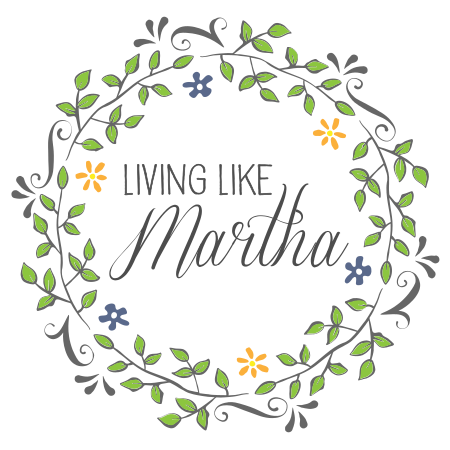
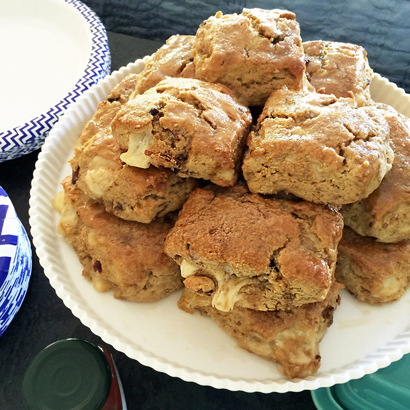
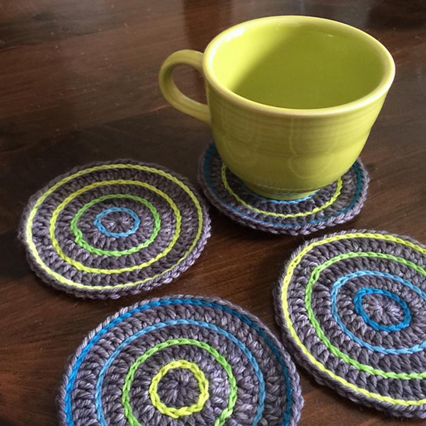
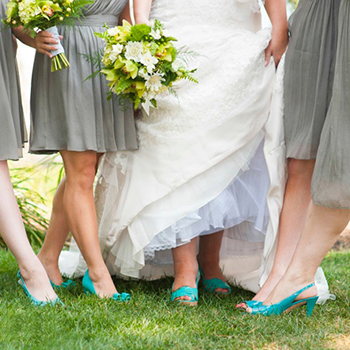
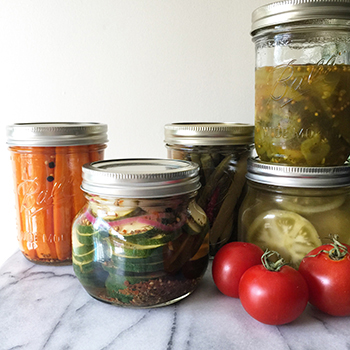
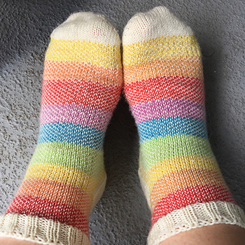

Craft
Cook
Celebrate
Blog
Contact

Maple Bacon Cheddar Scones

Crocheted Roller Coasters
Neon Beast: a knitted shawl

An un-cheesy beach wedding

Refrigerator Pickles

Rainbow Striped Pixel Socks